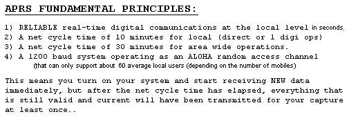
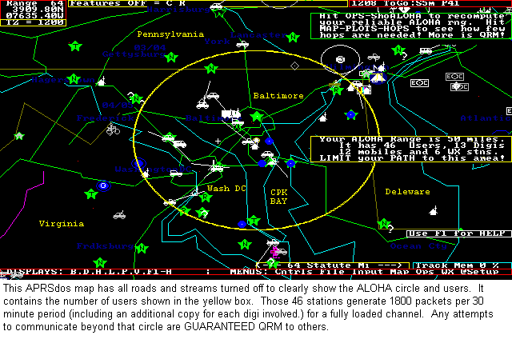
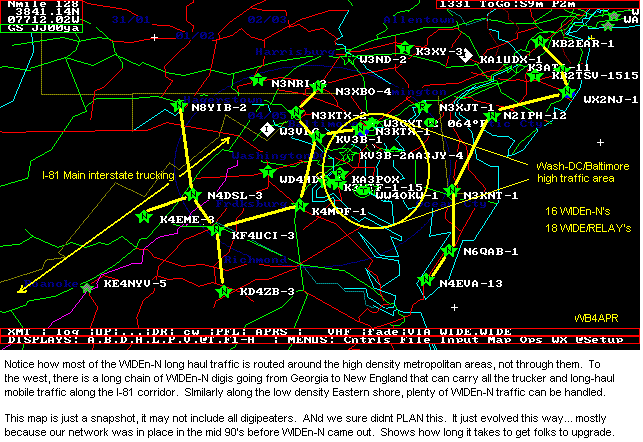

Note: All of this info was on the FIX14439 (New-N Paradigm) web page, but has been captured here for clarity.
APRS CHANNEL FUNDAMENTALS: APRS can ONLY work at the local level on RF. It is only a
1200 baud channel shared by your nearest neighbors. . It can only work if
you and your neighbors understand how it works and its limitations and you are
not QRM'ed to death from packets from out-of-area. . The following table
shows the BASIC ASSUMPTIONS about the goals of an APRS network:

THE ALOHA CONCEPT: The 1200 baud 144.39 channel can only support an average user load of about 60 to 100 or so average APRS stations or objects in an RF domain based on the typical transmission rates and number of digipeaters and number of hops. . See the breakdown and analysis. . This is because any greater load than 100% channel capacity guarantees lost packets due to collisions. . The size of your area that holds the number of users capable of generating 100% channel capacity we call your ALOHA circle. You are responsbile to make sure that your packets get to your surrounding ALOHA network but no further so you do not add QRM to other networks. ALOHA Circle concept.

The ALOHA Circle Display:
Every APRS software should calculate and display the ALOHA circle for its user. . It should
be overlayed on every map so that it is never out of mind. . But even without
the ALOHA calculator built-in, users can still get a good estimate from FINDU.COM. .
Simply EDIT-COPY this URL into your browser with YOUR APRS station callsign on the end:
http://map.findu.com/WB4APR-9 <= your call here
That FINDU page sorts your 60 nearest APRS stations by range and so the range
to the last person on that list is the radius (or range) of your ALOHA circle. . This
list of stations is your APRS ALOHA Neighborhood. It also includes which digipeaters you
may need to hit, to be able to communicate with them. . More importantly, your packets
should not go beyond this circle routinely. .
In Southern California, your ALOHA circle may only
be 15 miles and you may only need ONE hop to hit everyone. . In WYOMING, you may need
more hops....
The ALOHA circle is automatic now in all copies of APRSdos (APRSmax after
APRS871.zip). . See Map plot above. . There is also an add-on for UIview, and
the next release of WinAPRS should have it too. .
It computes and maintains a plot of the yellow ALOHA range circle on
all map zooms. Around Baltimore it is about 45 to 55 miles depending on the number
of mobiles at any time. . Also displayed below is the MAP-PLOT-HOPS command that shows
a plot of the number of hops it took for surrounding digis to reach me.
MAPS-PLOTS-USERS shows the same plot of user hops. .
Notice that 2 hops will get one EVERYWHERE within this Aloha Circle even though there
are 13 digis in that area!
Note, that these PHG circles are the new APRS1.1 half-size APRS standard which more closely
represent a MOBILE's range. . The actual RF range of these digis
to fixed stations and other digis is TWICE that shown above.)
Accomodating future growth:
To allow APRS to grow, just like the cell-phone system, the cell size must get smaller
to keep within the ALOHA limits in
any one RF area. . High digis can be good if the number of hops of all users is
restricted. . But, in generally flat land, more users may require more, but lower digis,
and restricting the number of hops. .
If you can reduce what the tall-hear-too-much-mountain-top sites hear to only respond to
DIRECT packets (and no surrounding QRM) they can support over 100 users...
See the very-tall digi problem in the LA basin in Southern
California. . There are several options for the tall-super-site digis depending
on your area:
WE MUST KEEP N SMALL:
Looking at the earlier map above, you can see how a WIDE3-3 path can hit most
digipeaters throughout the 5 states of VA, MD, DE and SE-PA and southern NJ. . These days,
high density areas such as these can only support WIDE2-2 and no more. . See the chart:
The New-N Paradigm significantly reduced the
number of hops and greatly simplified settings so that the APRS network is beginning to work
everywhere for everyone using consistent settings.
By eliminating all the old legacy paths, the New-N Paradigm also simplified user education down
to only the receommended path of WIDEn-N with N usually being 2. Though there are still some
options for optimizing the 2 hop recommendation as follows:

Collisions and Lost Packets: There is no way to know the reliablity of your network
from general statistics of packets heard, because you cannot tell what you DON'T HEAR! .
Do not think you can monitor the channel load and make any meaningful conclusions!
A channel that is 800% overloaded and only passing 1 out of every 8 possible packets can
sound identical to one that is 50% loaded and passing 100% of every packet for everyone...
That is why we came up with the ALOHA algorithm, so that you can analyze the network
according to the statistics of who is getting through.
ALOHA NETWORKS: APRS is a random network based on random transmissions of
data among many users trying to share a channel. . This technique was well studied back
in the 60's and is called an ALOHA network for where it was first developed at the
University of Hawaii. It is the basis for most data networks which evolved into
what we know of as the ARPANET and now the INTERNET and other protocols. . Click for the
original definition of an ALOHA system.
Basically the channel must be quiet most of the time, so that a sender will have a
good chance of a successful transmission. . You can add more and more users, but eventually
you get to the point that adding more users only adds more collisions, and the net
reliability goes down drastically. . If you add up the statistical load of about
60 or so average APRS users, their packets typically represent a full channel. .
Any more and the network suffers due to collisions.
So, how many users are there in range of your digi?
If your digi hears too much then its reliability for local users is poor!
Of course, these numbers are inflated due to a number of non-RF stations that also
get counted but it is representative. . Best to look at exactly what is in the
footprint by going to map.findu.com and looking at the nearby
stations to see what exactly is there. .
If there are too many RF users in range, then the APRS community in that area must
add limits to n-N traffic in surrounding digis to reduce the local load on the
local digi to better serve their local users. . Here are a number of things you can do:
APRS Channel Throughput:
The above screen capture of the APRSdos program called SIMULATE.BAS shows how this
program can be used to simulate the throughput on any kind of ALOHA channel. . In this
example it shows how 85% of the 40 stations all with a brand-new packet of information
will be successful in getting at least one successful digipeat of that new information
in the first 8 minutes. . This example caused about 280 packets to be generated
using the APRSdos decaying algorithm to decay the retry-time after each attempt so
that new data is transmitted more often, and old data decays down to much lower rates
to preserve channel capacity.
Many popular APRS systems, unfortunately, use a constant transmission rate of X packets
every Y period of time which results in a DOUBLING of QRM (over 480 packets) being generated
for only a 2% improvement in throughput over the same 8 minutes.
Bob, WB4APR

........ Users can still listen to it on UHF or an IGate on UHF will still get everything


click to see 3 digis.
click to see 2 digis.
In this context, LOWER is BETTER (just like CELL phones have grown, by going to smaller
and smaller cells!).

{kind=link}